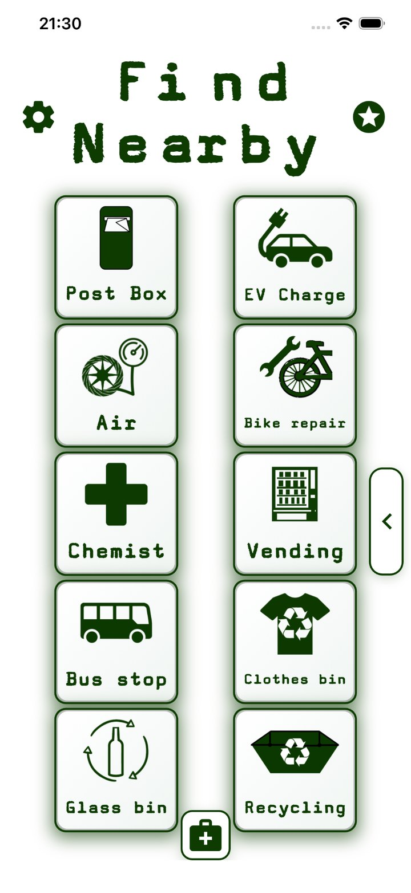

Fast UK and Ireland coverage, plus worldwide search support
Find Nearby currently includes 1,165,337 mapped locations in its fast UK and Ireland coverage database. The app also supports searches elsewhere using public map data where available, but results outside the UK and Ireland may be slower and less complete.
| Category | Fast UK and Ireland count |
|---|---|
| Bus stops | 315,692 |
| Parking | 229,937 |
| Benches | 166,054 |
| Post boxes | 91,727 |
| Waste baskets | 84,095 |
| Bicycle parking | 63,422 |
| Playgrounds | 48,510 |
| Accessible parking | 29,115 |
| Defibrillators | 23,207 |
| Grit bins | 16,058 |
| Cash machines | 15,879 |
| Toilets | 14,810 |
| GPs / doctors | 11,415 |
| Chemists | 10,705 |
| Fuel | 10,103 |
| EV charging stations | 8,545 |
| Accessible toilets | 5,109 |
| Glass bins | 4,794 |
| Clothes bins | 3,684 |
| Drinking water | 2,782 |
| Hospitals | 2,071 |
| Parent & child parking | 2,013 |
| Baby-changing toilets | 1,718 |
| Recycling centres | 1,708 |
| Air for tyres | 1,102 |
| Bike repair stations | 669 |
| Vending machines | 413 |
These counts are for Find Nearby’s fast UK and Ireland coverage database only. Worldwide searches are also supported using public map data where available, but those results are not included in this table and may be slower or less complete. Counts are useful as a guide, but individual locations and details may be incomplete, unavailable or out of date.
Why fast mapped coverage matters
Find Nearby’s fast UK and Ireland coverage database helps return results quickly for common real-life searches, such as toilets, parking, benches, playparks, defibrillators, GPs and hospitals. Searches outside the UK and Ireland are also supported using public map data where available, but those searches may take longer and coverage may vary more by country or area.
More everyday categories inside the app
Find Nearby is not just for toilets and parking. It also includes practical categories like post boxes, EV charging, air for tyres, bike repair stations, chemists, bus stops, clothes bins, glass bins and recycling centres.
